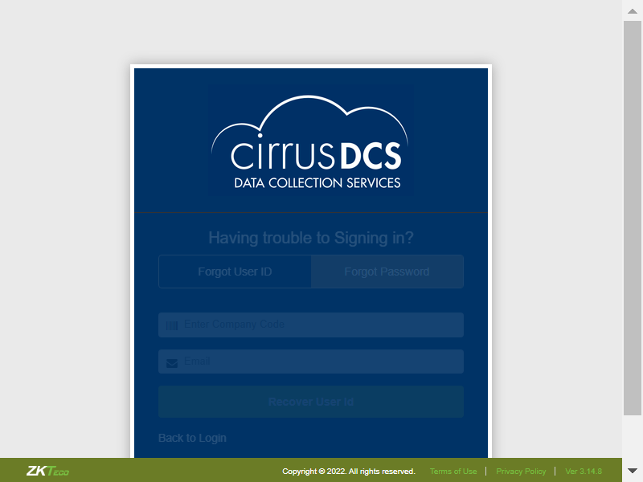
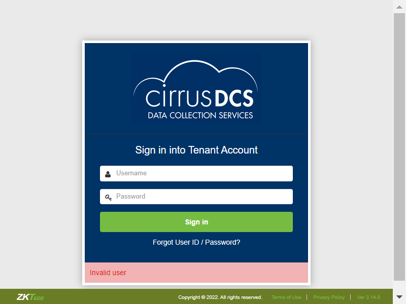

-
CirrusDCS
0h 1m 31s+80ms
17:13:48 PMCirrusDCS
03.31.2023 17:13:48 03.31.2023 17:15:19 0h 1m 31s+80ms@CirrusDCSI want to use this template for my feature fileTC01: Verify whether User is able to navigate to DcsTenantLogincom.zkteco.cirrusdcs.stepDefinitions.CirrusDCS.i_initialize_drivers_for_DCS_automation()Driver InitializedGiven I visit CirrusDCS TenantLogin pageThen I verify user navigation to tenant Login pageTC02: Verify all the components in tenant login pagecom.zkteco.cirrusdcs.stepDefinitions.CirrusDCS.i_initialize_drivers_for_DCS_automation()Driver InitializedGiven I visit CirrusDCS TenantLogin pageThen I validate all the components in HostAdmin login pageTC03: Verify whether user is able to navigate to terms of use pagecom.zkteco.cirrusdcs.stepDefinitions.CirrusDCS.i_initialize_drivers_for_DCS_automation()Driver InitializedGiven I visit CirrusDCS TenantLogin pageThen I verify user navigation to terms of use pageTC04: Verify whether user is able to view terms of use text boxcom.zkteco.cirrusdcs.stepDefinitions.CirrusDCS.i_initialize_drivers_for_DCS_automation()Driver InitializedGiven I visit CirrusDCS TenantLogin pageThen I verify user navigation to terms of use pageThen I verify the data present in the terms of use text area fieldTC05: Verify whether user is able to navigate back to login page on click of back to login linkcom.zkteco.cirrusdcs.stepDefinitions.CirrusDCS.i_initialize_drivers_for_DCS_automation()Driver InitializedGiven I visit CirrusDCS TenantLogin pageThen I verify user navigation to terms of use pageWhen I Click on back to login linkThen I verify user navigation to tenant Login pageTC06: Verify whether user is able to navigate to privacy policy pagecom.zkteco.cirrusdcs.stepDefinitions.CirrusDCS.i_initialize_drivers_for_DCS_automation()Driver InitializedGiven I visit CirrusDCS TenantLogin pageThen I verify user navigation to privacy policy pageTC07: Verify whether user is able to view privacy policy text boxcom.zkteco.cirrusdcs.stepDefinitions.CirrusDCS.i_initialize_drivers_for_DCS_automation()Driver InitializedGiven I visit CirrusDCS TenantLogin pageThen I verify user navigation to privacy policy pageThen I verify the data present in the terms of use text area fieldTC08: Verify whether user is able to navigate back to login page on click of back to login link in privacy policy pagecom.zkteco.cirrusdcs.stepDefinitions.CirrusDCS.i_initialize_drivers_for_DCS_automation()Driver InitializedGiven I visit CirrusDCS TenantLogin pageThen I verify user navigation to privacy policy pageWhen I Click on back to login linkThen I verify user navigation to tenant Login pageTC09: verify whether user is able to navigate to forgot password or forgot User Id pagecom.zkteco.cirrusdcs.stepDefinitions.CirrusDCS.i_initialize_drivers_for_DCS_automation()Driver InitializedGiven I visit CirrusDCS TenantLogin pageWhen I Click on forgot password linkThen I validate user navigation to forgotpassword pageTC010: verify the tabs present in the Forgot Password pagecom.zkteco.cirrusdcs.stepDefinitions.CirrusDCS.i_initialize_drivers_for_DCS_automation()Driver InitializedGiven I visit CirrusDCS TenantLogin pageWhen I Click on forgot password linkThen I validate the tabs present in the forgot password pageTC011: verify the elements present in the Forgot User ID tabcom.zkteco.cirrusdcs.stepDefinitions.CirrusDCS.i_initialize_drivers_for_DCS_automation()Driver InitializedGiven I visit CirrusDCS TenantLogin pageWhen I Click on forgot password linkThen I validate the elements present in the Forgot User Id tab in tenant loginTC012: verify the elements present in the Forgot User ID tabcom.zkteco.cirrusdcs.stepDefinitions.CirrusDCS.i_initialize_drivers_for_DCS_automation()Driver InitializedGiven I visit CirrusDCS TenantLogin pageWhen I Click on forgot password linkThen I validate the elements present in the Forgotpassword tab in tenant logincom.zkteco.cirrusdcs.stepDefinitions.CirrusDCS.teardown(io.cucumber.java.Scenario)TC013: Verify whether user is able to recover the email id by giving valid detailscom.zkteco.cirrusdcs.stepDefinitions.CirrusDCS.i_initialize_drivers_for_DCS_automation()Driver InitializedGiven I visit CirrusDCS TenantLogin pageWhen I Click on forgot password linkThen I enter all valid details in required fields in tenant loginThen I validate the resultsTC014: Verify whether user is able to view the error message for when user gives invalid details in forgot user id tabcom.zkteco.cirrusdcs.stepDefinitions.CirrusDCS.i_initialize_drivers_for_DCS_automation()Driver InitializedGiven I visit CirrusDCS TenantLogin pageWhen I Click on forgot password linkThen I enter invalid details in forgot user id tab in tenant loginThen I validate the error messageTC015: Verify whether user is able to recover the password by giving all necessary detailscom.zkteco.cirrusdcs.stepDefinitions.CirrusDCS.i_initialize_drivers_for_DCS_automation()Driver InitializedGiven I visit CirrusDCS TenantLogin pageWhen I Click on forgot password linkThen I enter all valid details in forgot password required fields in tenannt loginThen I validate the message for forgotpasswordcom.zkteco.cirrusdcs.stepDefinitions.CirrusDCS.teardown(io.cucumber.java.Scenario)TC016: Verify whether user is able to view the error message when user gives invalid details in forgot password tabcom.zkteco.cirrusdcs.stepDefinitions.CirrusDCS.i_initialize_drivers_for_DCS_automation()Driver InitializedGiven I visit CirrusDCS TenantLogin pageWhen I Click on forgot password linkThen I enter invalid details in forgot password tab in tenantThen I validate the error messageTC017: Verify whether user is able to navigate back to hostadmin login page, on click of back to logincom.zkteco.cirrusdcs.stepDefinitions.CirrusDCS.i_initialize_drivers_for_DCS_automation()Driver InitializedGiven I visit CirrusDCS TenantLogin pageWhen I Click on forgot password linkWhen I Click on back to login linkThen I verify user navigation to tenant Login pageTC018: Verify whether error message is displayed for mandatory fields in login screencom.zkteco.cirrusdcs.stepDefinitions.CirrusDCS.i_initialize_drivers_for_DCS_automation()Driver InitializedGiven I visit CirrusDCS TenantLogin pageWhen I Click on Login buttonThen I validate the error message for mandatory fieldsTC019: Verify whether user is able to login with valid credentialscom.zkteco.cirrusdcs.stepDefinitions.CirrusDCS.i_initialize_drivers_for_DCS_automation()Driver InitializedGiven I visit CirrusDCS TenantLogin pageGiven I Enter valid credentails in login screenWhen I Click on Login buttonThen I validate the user navigation to home screen with valid credentialsTC020: Verify whether user is able to login with Invalid credentialscom.zkteco.cirrusdcs.stepDefinitions.CirrusDCS.i_initialize_drivers_for_DCS_automation()Driver InitializedGiven I visit CirrusDCS TenantLogin pageGiven I Enter Invalid credentails in login screenWhen I Click on Login buttonThen I validate the error message
-
@CirrusDCS
21 tests
18 2@CirrusDCS
18 passed 2 failedStatus Timestamp TestName 17:13:48 PM CirrusDCS 17:13:48 PM TC01: Verify whether User is able to navigate to DcsTenantLogin CirrusDCS.TC01: Verify whether User is able to navigate to DcsTenantLogin17:13:51 PM TC02: Verify all the components in tenant login page CirrusDCS.TC02: Verify all the components in tenant login page17:13:54 PM TC03: Verify whether user is able to navigate to terms of use page CirrusDCS.TC03: Verify whether user is able to navigate to terms of use page17:13:57 PM TC04: Verify whether user is able to view terms of use text box CirrusDCS.TC04: Verify whether user is able to view terms of use text box17:14:00 PM TC05: Verify whether user is able to navigate back to login page on click of back to login link CirrusDCS.TC05: Verify whether user is able to navigate back to login page on click of back to login link17:14:03 PM TC06: Verify whether user is able to navigate to privacy policy page CirrusDCS.TC06: Verify whether user is able to navigate to privacy policy page17:14:06 PM TC07: Verify whether user is able to view privacy policy text box CirrusDCS.TC07: Verify whether user is able to view privacy policy text box17:14:09 PM TC08: Verify whether user is able to navigate back to login page on click of back to login link in privacy policy page CirrusDCS.TC08: Verify whether user is able to navigate back to login page on click of back to login link in privacy policy page17:14:12 PM TC09: verify whether user is able to navigate to forgot password or forgot User Id page CirrusDCS.TC09: verify whether user is able to navigate to forgot password or forgot User Id page17:14:15 PM TC010: verify the tabs present in the Forgot Password page CirrusDCS.TC010: verify the tabs present in the Forgot Password page17:14:18 PM TC011: verify the elements present in the Forgot User ID tab CirrusDCS.TC011: verify the elements present in the Forgot User ID tab17:14:21 PM TC012: verify the elements present in the Forgot User ID tab CirrusDCS.TC012: verify the elements present in the Forgot User ID tab17:14:23 PM TC013: Verify whether user is able to recover the email id by giving valid details CirrusDCS.TC013: Verify whether user is able to recover the email id by giving valid details17:14:27 PM TC014: Verify whether user is able to view the error message for when user gives invalid details in forgot user id tab CirrusDCS.TC014: Verify whether user is able to view the error message for when user gives invalid details in forgot user id tab17:14:31 PM TC015: Verify whether user is able to recover the password by giving all necessary details CirrusDCS.TC015: Verify whether user is able to recover the password by giving all necessary details17:15:04 PM TC016: Verify whether user is able to view the error message when user gives invalid details in forgot password tab CirrusDCS.TC016: Verify whether user is able to view the error message when user gives invalid details in forgot password tab17:15:08 PM TC017: Verify whether user is able to navigate back to hostadmin login page, on click of back to login CirrusDCS.TC017: Verify whether user is able to navigate back to hostadmin login page, on click of back to login17:15:10 PM TC018: Verify whether error message is displayed for mandatory fields in login screen CirrusDCS.TC018: Verify whether error message is displayed for mandatory fields in login screen17:15:13 PM TC019: Verify whether user is able to login with valid credentials CirrusDCS.TC019: Verify whether user is able to login with valid credentials17:15:16 PM TC020: Verify whether user is able to login with Invalid credentials CirrusDCS.TC020: Verify whether user is able to login with Invalid credentials -
@CirrusDCSTenantLogin_TC_01
1 tests
1@CirrusDCSTenantLogin_TC_01
1 passedStatus Timestamp TestName 17:13:48 PM TC01: Verify whether User is able to navigate to DcsTenantLogin CirrusDCS.TC01: Verify whether User is able to navigate to DcsTenantLogin -
@TenantLogin
20 tests
18 2@TenantLogin
18 passed 2 failedStatus Timestamp TestName 17:13:48 PM TC01: Verify whether User is able to navigate to DcsTenantLogin CirrusDCS.TC01: Verify whether User is able to navigate to DcsTenantLogin17:13:51 PM TC02: Verify all the components in tenant login page CirrusDCS.TC02: Verify all the components in tenant login page17:13:54 PM TC03: Verify whether user is able to navigate to terms of use page CirrusDCS.TC03: Verify whether user is able to navigate to terms of use page17:13:57 PM TC04: Verify whether user is able to view terms of use text box CirrusDCS.TC04: Verify whether user is able to view terms of use text box17:14:00 PM TC05: Verify whether user is able to navigate back to login page on click of back to login link CirrusDCS.TC05: Verify whether user is able to navigate back to login page on click of back to login link17:14:03 PM TC06: Verify whether user is able to navigate to privacy policy page CirrusDCS.TC06: Verify whether user is able to navigate to privacy policy page17:14:06 PM TC07: Verify whether user is able to view privacy policy text box CirrusDCS.TC07: Verify whether user is able to view privacy policy text box17:14:09 PM TC08: Verify whether user is able to navigate back to login page on click of back to login link in privacy policy page CirrusDCS.TC08: Verify whether user is able to navigate back to login page on click of back to login link in privacy policy page17:14:12 PM TC09: verify whether user is able to navigate to forgot password or forgot User Id page CirrusDCS.TC09: verify whether user is able to navigate to forgot password or forgot User Id page17:14:15 PM TC010: verify the tabs present in the Forgot Password page CirrusDCS.TC010: verify the tabs present in the Forgot Password page17:14:18 PM TC011: verify the elements present in the Forgot User ID tab CirrusDCS.TC011: verify the elements present in the Forgot User ID tab17:14:21 PM TC012: verify the elements present in the Forgot User ID tab CirrusDCS.TC012: verify the elements present in the Forgot User ID tab17:14:23 PM TC013: Verify whether user is able to recover the email id by giving valid details CirrusDCS.TC013: Verify whether user is able to recover the email id by giving valid details17:14:27 PM TC014: Verify whether user is able to view the error message for when user gives invalid details in forgot user id tab CirrusDCS.TC014: Verify whether user is able to view the error message for when user gives invalid details in forgot user id tab17:14:31 PM TC015: Verify whether user is able to recover the password by giving all necessary details CirrusDCS.TC015: Verify whether user is able to recover the password by giving all necessary details17:15:04 PM TC016: Verify whether user is able to view the error message when user gives invalid details in forgot password tab CirrusDCS.TC016: Verify whether user is able to view the error message when user gives invalid details in forgot password tab17:15:08 PM TC017: Verify whether user is able to navigate back to hostadmin login page, on click of back to login CirrusDCS.TC017: Verify whether user is able to navigate back to hostadmin login page, on click of back to login17:15:10 PM TC018: Verify whether error message is displayed for mandatory fields in login screen CirrusDCS.TC018: Verify whether error message is displayed for mandatory fields in login screen17:15:13 PM TC019: Verify whether user is able to login with valid credentials CirrusDCS.TC019: Verify whether user is able to login with valid credentials17:15:16 PM TC020: Verify whether user is able to login with Invalid credentials CirrusDCS.TC020: Verify whether user is able to login with Invalid credentials -
@DCSFullsuite
20 tests
18 2@DCSFullsuite
18 passed 2 failedStatus Timestamp TestName 17:13:48 PM TC01: Verify whether User is able to navigate to DcsTenantLogin CirrusDCS.TC01: Verify whether User is able to navigate to DcsTenantLogin17:13:51 PM TC02: Verify all the components in tenant login page CirrusDCS.TC02: Verify all the components in tenant login page17:13:54 PM TC03: Verify whether user is able to navigate to terms of use page CirrusDCS.TC03: Verify whether user is able to navigate to terms of use page17:13:57 PM TC04: Verify whether user is able to view terms of use text box CirrusDCS.TC04: Verify whether user is able to view terms of use text box17:14:00 PM TC05: Verify whether user is able to navigate back to login page on click of back to login link CirrusDCS.TC05: Verify whether user is able to navigate back to login page on click of back to login link17:14:03 PM TC06: Verify whether user is able to navigate to privacy policy page CirrusDCS.TC06: Verify whether user is able to navigate to privacy policy page17:14:06 PM TC07: Verify whether user is able to view privacy policy text box CirrusDCS.TC07: Verify whether user is able to view privacy policy text box17:14:09 PM TC08: Verify whether user is able to navigate back to login page on click of back to login link in privacy policy page CirrusDCS.TC08: Verify whether user is able to navigate back to login page on click of back to login link in privacy policy page17:14:12 PM TC09: verify whether user is able to navigate to forgot password or forgot User Id page CirrusDCS.TC09: verify whether user is able to navigate to forgot password or forgot User Id page17:14:15 PM TC010: verify the tabs present in the Forgot Password page CirrusDCS.TC010: verify the tabs present in the Forgot Password page17:14:18 PM TC011: verify the elements present in the Forgot User ID tab CirrusDCS.TC011: verify the elements present in the Forgot User ID tab17:14:21 PM TC012: verify the elements present in the Forgot User ID tab CirrusDCS.TC012: verify the elements present in the Forgot User ID tab17:14:23 PM TC013: Verify whether user is able to recover the email id by giving valid details CirrusDCS.TC013: Verify whether user is able to recover the email id by giving valid details17:14:27 PM TC014: Verify whether user is able to view the error message for when user gives invalid details in forgot user id tab CirrusDCS.TC014: Verify whether user is able to view the error message for when user gives invalid details in forgot user id tab17:14:31 PM TC015: Verify whether user is able to recover the password by giving all necessary details CirrusDCS.TC015: Verify whether user is able to recover the password by giving all necessary details17:15:04 PM TC016: Verify whether user is able to view the error message when user gives invalid details in forgot password tab CirrusDCS.TC016: Verify whether user is able to view the error message when user gives invalid details in forgot password tab17:15:08 PM TC017: Verify whether user is able to navigate back to hostadmin login page, on click of back to login CirrusDCS.TC017: Verify whether user is able to navigate back to hostadmin login page, on click of back to login17:15:10 PM TC018: Verify whether error message is displayed for mandatory fields in login screen CirrusDCS.TC018: Verify whether error message is displayed for mandatory fields in login screen17:15:13 PM TC019: Verify whether user is able to login with valid credentials CirrusDCS.TC019: Verify whether user is able to login with valid credentials17:15:16 PM TC020: Verify whether user is able to login with Invalid credentials CirrusDCS.TC020: Verify whether user is able to login with Invalid credentials -
@CirrusDCSTenantLogin_TC_02
1 tests
1@CirrusDCSTenantLogin_TC_02
1 passedStatus Timestamp TestName 17:13:51 PM TC02: Verify all the components in tenant login page CirrusDCS.TC02: Verify all the components in tenant login page -
@CirrusDCSTenantLogin_TC_03
1 tests
1@CirrusDCSTenantLogin_TC_03
1 passedStatus Timestamp TestName 17:13:54 PM TC03: Verify whether user is able to navigate to terms of use page CirrusDCS.TC03: Verify whether user is able to navigate to terms of use page -
@CirrusDCSTenantLogin_TC_04
1 tests
1@CirrusDCSTenantLogin_TC_04
1 passedStatus Timestamp TestName 17:13:57 PM TC04: Verify whether user is able to view terms of use text box CirrusDCS.TC04: Verify whether user is able to view terms of use text box -
@CirrusDCSTenantLogin_TC_05
1 tests
1@CirrusDCSTenantLogin_TC_05
1 passedStatus Timestamp TestName 17:14:00 PM TC05: Verify whether user is able to navigate back to login page on click of back to login link CirrusDCS.TC05: Verify whether user is able to navigate back to login page on click of back to login link -
@CirrusDCSTenantLogin_TC_06
1 tests
1@CirrusDCSTenantLogin_TC_06
1 passedStatus Timestamp TestName 17:14:03 PM TC06: Verify whether user is able to navigate to privacy policy page CirrusDCS.TC06: Verify whether user is able to navigate to privacy policy page -
@CirrusDCSTenantLogin_TC_07
1 tests
1@CirrusDCSTenantLogin_TC_07
1 passedStatus Timestamp TestName 17:14:06 PM TC07: Verify whether user is able to view privacy policy text box CirrusDCS.TC07: Verify whether user is able to view privacy policy text box -
@CirrusDCSTenantLogin_TC_08
1 tests
1@CirrusDCSTenantLogin_TC_08
1 passedStatus Timestamp TestName 17:14:09 PM TC08: Verify whether user is able to navigate back to login page on click of back to login link in privacy policy page CirrusDCS.TC08: Verify whether user is able to navigate back to login page on click of back to login link in privacy policy page -
@CirrusDCSTenantLogin_TC_09
1 tests
1@CirrusDCSTenantLogin_TC_09
1 passedStatus Timestamp TestName 17:14:12 PM TC09: verify whether user is able to navigate to forgot password or forgot User Id page CirrusDCS.TC09: verify whether user is able to navigate to forgot password or forgot User Id page -
@CirrusDCSTenantLogin_TC_10
1 tests
1@CirrusDCSTenantLogin_TC_10
1 passedStatus Timestamp TestName 17:14:15 PM TC010: verify the tabs present in the Forgot Password page CirrusDCS.TC010: verify the tabs present in the Forgot Password page -
@CirrusDCSTenantLogin_TC_11
1 tests
1@CirrusDCSTenantLogin_TC_11
1 passedStatus Timestamp TestName 17:14:18 PM TC011: verify the elements present in the Forgot User ID tab CirrusDCS.TC011: verify the elements present in the Forgot User ID tab -
@CirrusDCSTenantLogin_TC_12
1 tests
1@CirrusDCSTenantLogin_TC_12
1 failedStatus Timestamp TestName 17:14:21 PM TC012: verify the elements present in the Forgot User ID tab CirrusDCS.TC012: verify the elements present in the Forgot User ID tab -
@CirrusDCSTenantLogin_TC_13
1 tests
1@CirrusDCSTenantLogin_TC_13
1 passedStatus Timestamp TestName 17:14:23 PM TC013: Verify whether user is able to recover the email id by giving valid details CirrusDCS.TC013: Verify whether user is able to recover the email id by giving valid details -
@CirrusDCSTenantLogin_TC_14
1 tests
1@CirrusDCSTenantLogin_TC_14
1 passedStatus Timestamp TestName 17:14:27 PM TC014: Verify whether user is able to view the error message for when user gives invalid details in forgot user id tab CirrusDCS.TC014: Verify whether user is able to view the error message for when user gives invalid details in forgot user id tab -
@CirrusDCSTenantLogin_TC_15
1 tests
1@CirrusDCSTenantLogin_TC_15
1 failedStatus Timestamp TestName 17:14:31 PM TC015: Verify whether user is able to recover the password by giving all necessary details CirrusDCS.TC015: Verify whether user is able to recover the password by giving all necessary details -
@CirrusDCSTenantLogin_TC_16
1 tests
1@CirrusDCSTenantLogin_TC_16
1 passedStatus Timestamp TestName 17:15:04 PM TC016: Verify whether user is able to view the error message when user gives invalid details in forgot password tab CirrusDCS.TC016: Verify whether user is able to view the error message when user gives invalid details in forgot password tab -
@CirrusDCSTenantLogin_TC_17
1 tests
1@CirrusDCSTenantLogin_TC_17
1 passedStatus Timestamp TestName 17:15:08 PM TC017: Verify whether user is able to navigate back to hostadmin login page, on click of back to login CirrusDCS.TC017: Verify whether user is able to navigate back to hostadmin login page, on click of back to login -
@CirrusDCSTenantLogin_TC_18
1 tests
1@CirrusDCSTenantLogin_TC_18
1 passedStatus Timestamp TestName 17:15:10 PM TC018: Verify whether error message is displayed for mandatory fields in login screen CirrusDCS.TC018: Verify whether error message is displayed for mandatory fields in login screen -
@CirrusDCSTenantLogin_TC_19
1 tests
1@CirrusDCSTenantLogin_TC_19
1 passedStatus Timestamp TestName 17:15:13 PM TC019: Verify whether user is able to login with valid credentials CirrusDCS.TC019: Verify whether user is able to login with valid credentials -
@CirrusDCSTenantLogin_TC_20
1 tests
1@CirrusDCSTenantLogin_TC_20
1 passedStatus Timestamp TestName 17:15:16 PM TC020: Verify whether user is able to login with Invalid credentials CirrusDCS.TC020: Verify whether user is able to login with Invalid credentials
-
java.lang.AssertionError
1 tests
java.lang.AssertionError
Status Timestamp TestName 17:14:23 PM Then I validate the elements present in the Forgotpassword tab in tenant login TC012: verify the elements present in the Forgot User ID tab -
org.openqa.selenium.NoSuchElementException
1 tests
org.openqa.selenium.NoSuchElementException
Status Timestamp TestName 17:14:34 PM Then I validate the message for forgotpassword TC015: Verify whether user is able to recover the password by giving all necessary details
Features
Scenarios
Steps
Features
1
.00%Scenarios
20
90.00%Start
Mar 31, 2023 05:13:47 PM
Duration
0h 1m 32s+547ms
Timeline
Tags
| Name | Passed | Failed | Skipped | Others | Passed % |
|---|---|---|---|---|---|
| @CirrusDCS | 18 | 2 | 0 | 0 | 85.714% |
| @CirrusDCSTenantLogin_TC_01 | 1 | 0 | 0 | 0 | 100% |
| @TenantLogin | 18 | 2 | 0 | 0 | 90% |
| @DCSFullsuite | 18 | 2 | 0 | 0 | 90% |
| @CirrusDCSTenantLogin_TC_02 | 1 | 0 | 0 | 0 | 100% |
| @CirrusDCSTenantLogin_TC_03 | 1 | 0 | 0 | 0 | 100% |
| @CirrusDCSTenantLogin_TC_04 | 1 | 0 | 0 | 0 | 100% |
| @CirrusDCSTenantLogin_TC_05 | 1 | 0 | 0 | 0 | 100% |
| @CirrusDCSTenantLogin_TC_06 | 1 | 0 | 0 | 0 | 100% |
| @CirrusDCSTenantLogin_TC_07 | 1 | 0 | 0 | 0 | 100% |
| @CirrusDCSTenantLogin_TC_08 | 1 | 0 | 0 | 0 | 100% |
| @CirrusDCSTenantLogin_TC_09 | 1 | 0 | 0 | 0 | 100% |
| @CirrusDCSTenantLogin_TC_10 | 1 | 0 | 0 | 0 | 100% |
| @CirrusDCSTenantLogin_TC_11 | 1 | 0 | 0 | 0 | 100% |
| @CirrusDCSTenantLogin_TC_12 | 0 | 1 | 0 | 0 | 0% |
| @CirrusDCSTenantLogin_TC_13 | 1 | 0 | 0 | 0 | 100% |
| @CirrusDCSTenantLogin_TC_14 | 1 | 0 | 0 | 0 | 100% |
| @CirrusDCSTenantLogin_TC_15 | 0 | 1 | 0 | 0 | 0% |
| @CirrusDCSTenantLogin_TC_16 | 1 | 0 | 0 | 0 | 100% |
| @CirrusDCSTenantLogin_TC_17 | 1 | 0 | 0 | 0 | 100% |
| @CirrusDCSTenantLogin_TC_18 | 1 | 0 | 0 | 0 | 100% |
| @CirrusDCSTenantLogin_TC_19 | 1 | 0 | 0 | 0 | 100% |
| @CirrusDCSTenantLogin_TC_20 | 1 | 0 | 0 | 0 | 100% |